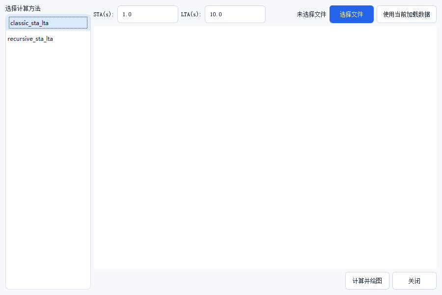

异常修复与震相拾取

入口：数据 › 去脉冲并绘图，或工具栏的异常修复按钮。
这个工具处理两类问题：脉冲型异常（个别采样点跳变）和缺样（记录里 有成段的无效值）。它和普通的「滤波」不是一回事——滤波会改变整条波形的频谱， 修复只替换掉那几个坏点。
十一种方法
左侧卡片是可选方法，点选后按 预览 看前后对比。
| 方法 | 原理 | 适用 |
|---|---|---|
| 阈值截断 | 超过阈值直接截到阈值 | 幅度失控的孤立尖峰，最直接 |
| MAD 清理 | 用中位数绝对偏差判异常 | 通用首选，对少量尖峰稳 |
| 移动平均清理 | 与移动平均线偏差过大则替换 | 尖峰成簇出现 |
| 月震保护型局部尖峰修复 | 局部判异常但保留真实震相 | 月震数据，避免削掉初动 |
| z 分数清理 | 按标准差倍数判异常 | 近似正态的噪声背景 |
| 阿波罗数据缺失值插值 | 对缺样段插值 | 阿波罗数据里的 -1 哨兵段 |
| 双侧参考频谱修复 | 用两侧数据的频谱一致性判异常 | 周期性干扰 |
| 分层参考频谱修复 | 同上，分频段处理 | 干扰集中在某个频段 |
| 孤立森林 | 集成学习判离群 | 复杂异常，需调参 |
| 局部离群因子（LOF） | 按局部密度判离群 | 异常点稀疏分布 |
| 神经网络修复 | 学习式修复 | 需要 PyTorch，环境不具备时不可用 |
先试 MAD，再试月震保护型
MAD 是无参数假设的稳健方法，绝大多数尖峰它能处理。只有在月震记录上削掉了
真实初动时，才换「月震保护型局部尖峰修复」。
分段修复与整道修复
同一个工具在两处出现，语义不同：
| 入口 | 作用范围 |
|---|---|
| 数据 › 去脉冲并绘图 | 整条 trace |
| 画布上圈选后从右键进入 | 只有圈选的时段 |
从工具内部发起时，部分方法必须先圈选区间才能执行——它们的判据依赖 「参考段」，没有圈选就没有参考段。
操作流程
- 在事件列表里选中事件
- 打开异常修复工具，左侧选一个方法
- 点 预览，右侧显示修复前后的对比图
- 不满意就换方法重来；满意后点 保存当前修复
- 修错了用 撤销上次修复 逐步回退
底部按钮：
| 按钮 | 作用 |
|---|---|
| 预览 | 计算并显示前后对比，不改数据 |
| 导出报告 | 生成修复报告（图 + 参数 + 统计） |
| 截图 | 保存当前预览图 |
| 保存当前修复 | 把结果写回工作流 |
| 撤销上次修复 | 退回上一次保存之前 |
修复历史是栈，不是树
「撤销上次修复」只能一步一步往回退，不能跳回任意一步。做过多次修复后想回到
最初状态，最稳的办法是撤销到底，或者重新导入数据。
STA/LTA 拾取

入口在工具栏的拾取按钮。
| 参数 | 默认 | 说明 |
|---|---|---|
| STA 窗口 | 1.0 s | 短时窗，要覆盖一个周期左右 |
| LTA 窗口 | 10.0 s | 长时窗，要覆盖背景噪声 |
两个窗口的比值超过触发阈值就判为事件到达。STA 太短会把噪声当成信号， LTA 太短会让比值抖动。
面板上 选择文件 读一个波形文件，使用当前加载数据 直接用 工程里选中的事件，计算并绘图 出结果。
自动拾取只是起点
STA/LTA 给的是「大致位置」，用于批量筛选。要发震时刻精度到 0.1 s 以内，
需要人工核对初动，或者用震源定位器里的多台拾取（见「震源定位」一章）。
常见问题
预览图是空白？
没有给 base_stream。从菜单入口打开时工具会自动拿当前选中事件；
如果事件列表里没选中，就没有波形可预览。
插值后波形出现台阶？ 缺样段太长。线性插值在长缺口上会退化成直线，改用样条类方法， 或者干脆把那一段裁掉。
神经网络修复显示不可用？
需要 PyTorch 环境。用 seisy 环境启动，而不是基础环境。